Editing Ready Player Me avatars in Animaze Editor
After importing your Ready Player Me avatar in Animaze Editor it will look like this:
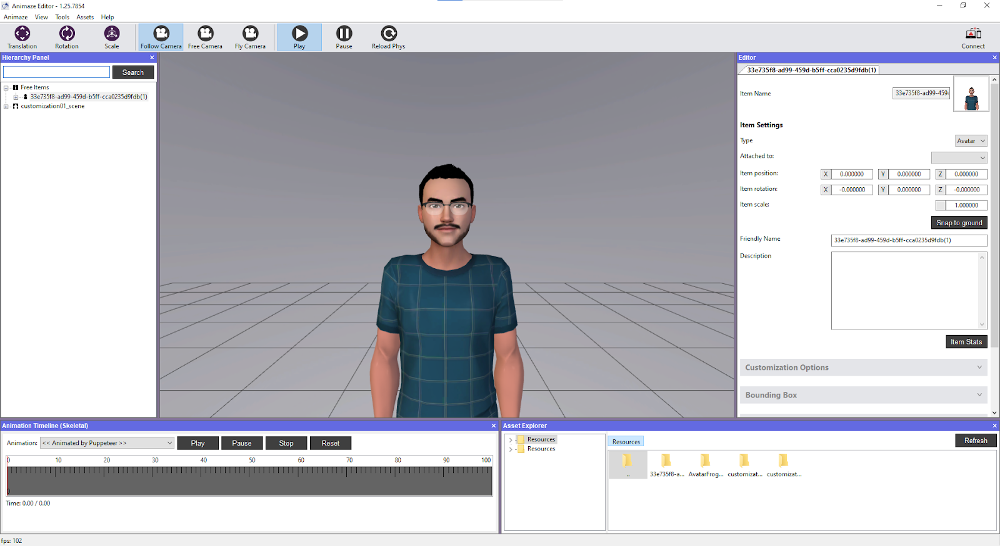
Now to start editing your avatar you will need to follow these steps:
-
Go to the Hierarchy Panel on the left side of the screen:
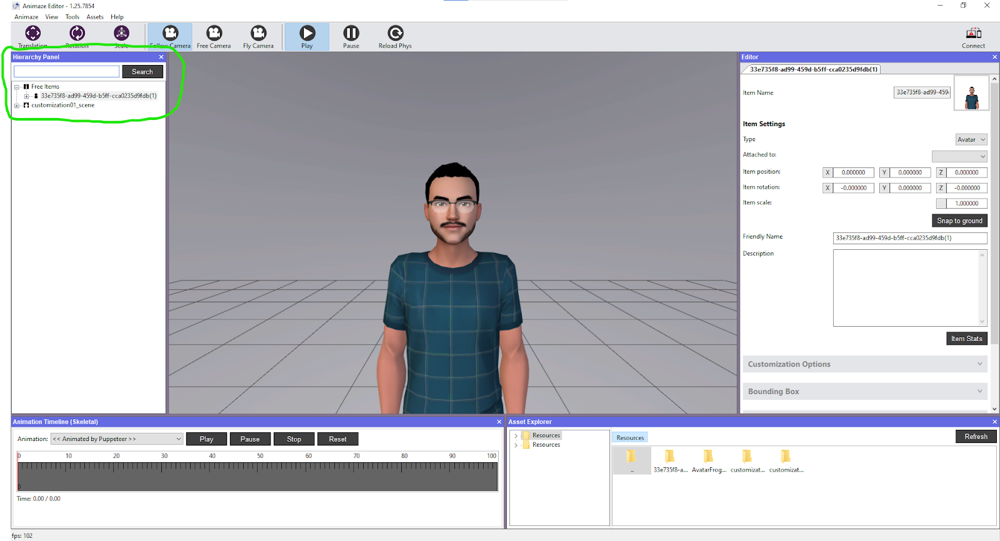
-
Select your avatar found under “Free Items” category and expand all meshes to be visible (meshes are the textures that we will later edit), like so:
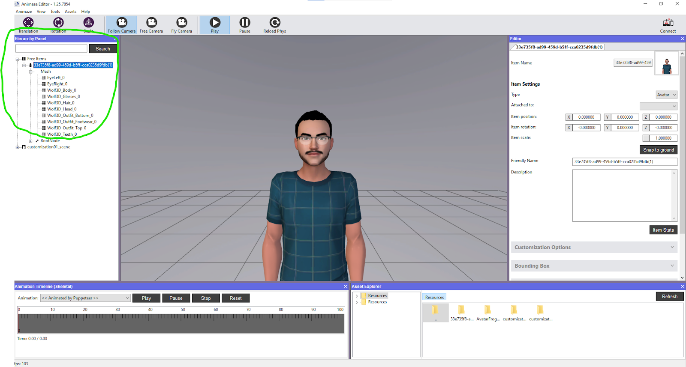
-
Now in order to establish how your avatar will look in Animaze you can go and grab the scene you want to Stream/make videos with from the Animaze Resources files folder(if you will use one of the Animaze Backgrounds), like so:
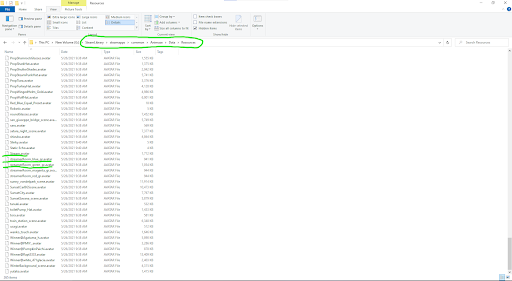
-
Copy the background you want to use and move it to the Resources folder of the Animaze Editor, like so:
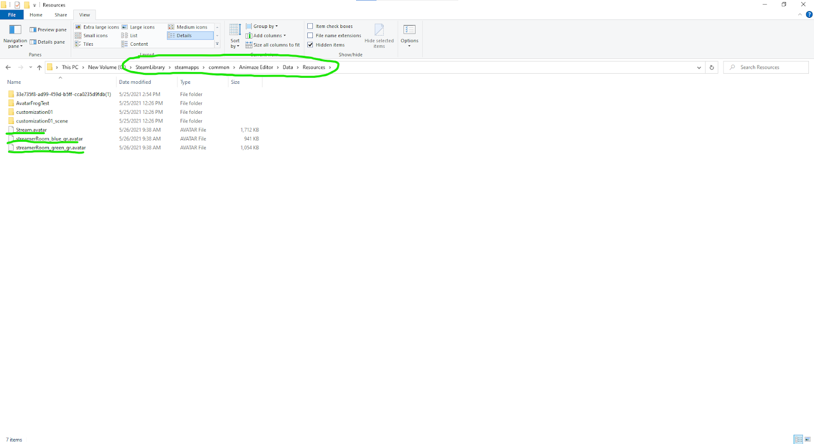
-
By having the same Background, that you will use in Animaze App, in the Editor will also let you customize the avatar to the lighting preset of said background (some of the Animaze Backgrounds that come with the app have their own lighting presets)
-
So now that we have our avatar, background and lighting preset let’s see how the avatar will look, if it's something like this example below, we will need to reduce the Shininess and Light Intensity of the light on the avatar:
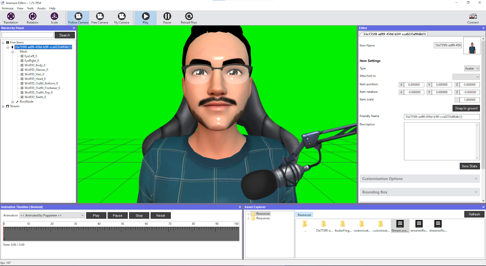
-
Going back to the Hierarchy Panel and the meshes of the avatar, we will need to find the mesh (or texture) that is equivalent to the avatar’s head, like so:
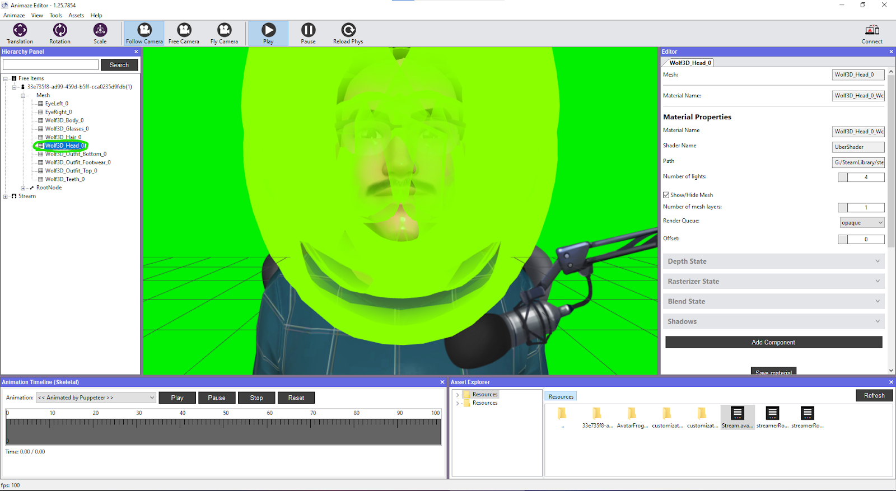
-
Now, after selecting the mesh responsible for the head of the avatar you can click outside the head of the avatar if you want to have better visibility on what is happening with the head, like so:
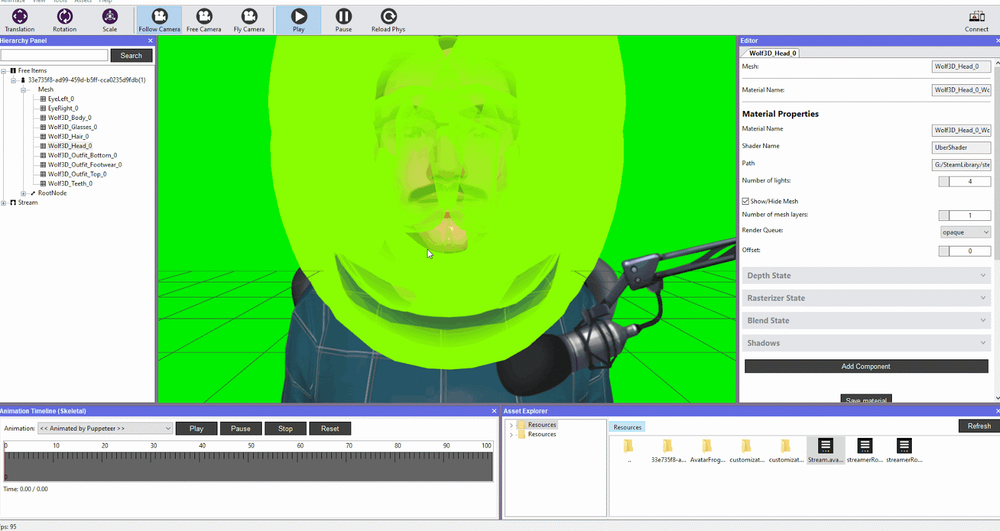
-
We will be switching our view to the right side of the editor now, in order to get that Shininess and Light Intensity down in the ‘Editor’ tab, as a general rule all the options that you see on this mesh as similar with the rest of the body parts meshes of the avatar so you can apply the same changes by changing them one by one, as you see below:
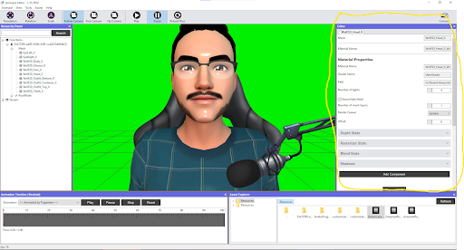
-
Scroll until you see the Lighting drawer and expanded, in the same fashion as the example:
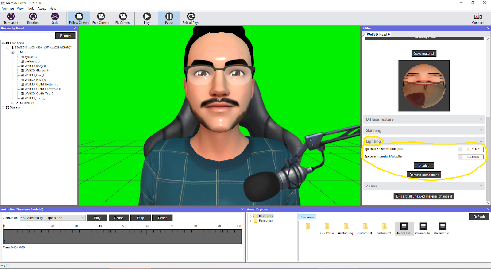
-
Customize the options to best suit your avatar, this is our result :) :
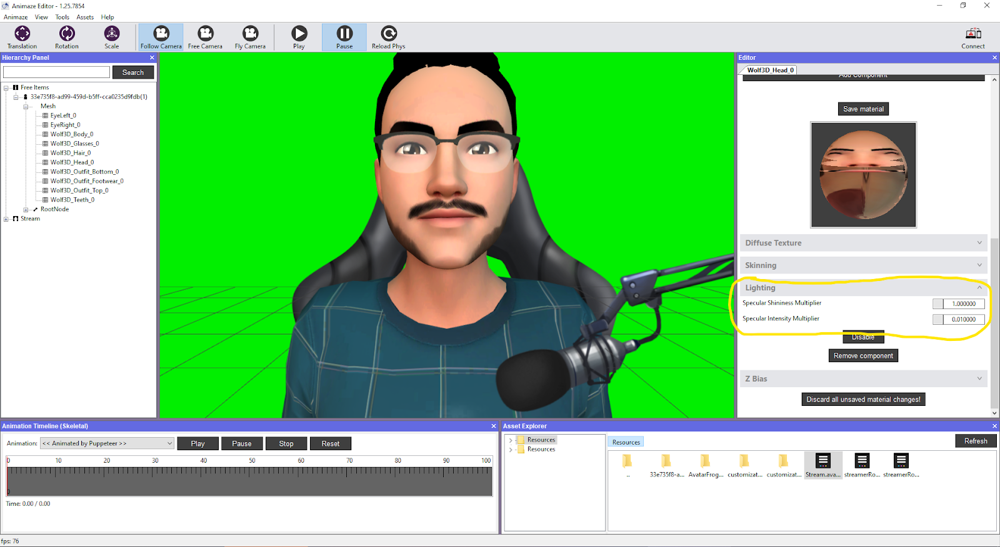
-
In the last step, always remember to use the “Save All Materials” and “Save item” options and to bundle your avatar after saving all the changes and re-import in Animaze App:
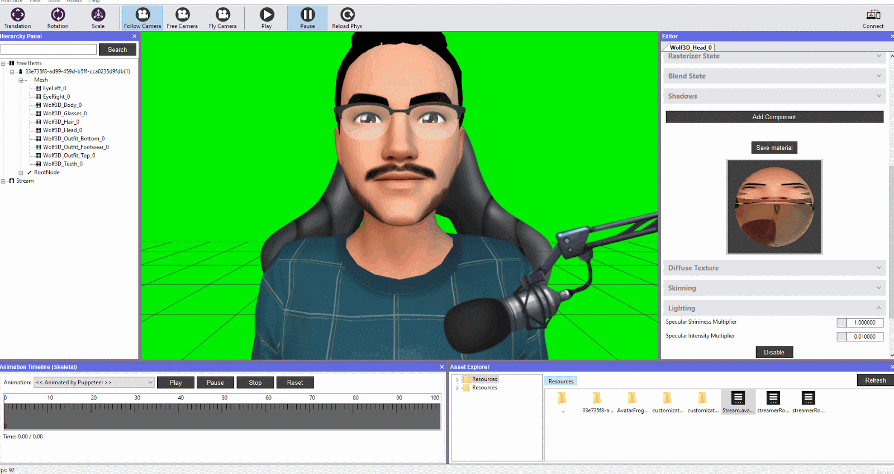